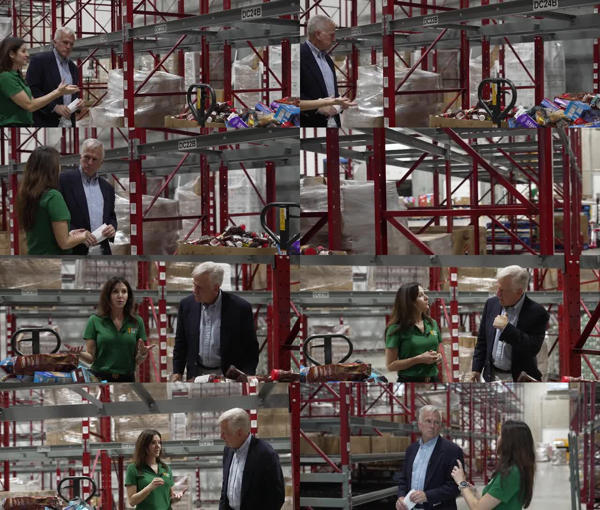
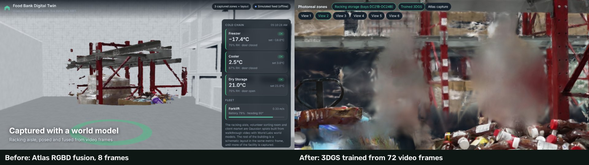
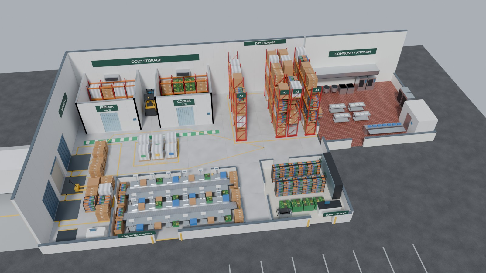

Pipeline: video to world model to Blender
Step 1 turns a video into OpenUSD captures of the spaces it shows. Step 1b models the rest of the building in Blender. Everything lands in one metric, Y-up frame with the floor at y = 0.
news video (MP4, 18:32, 1080p)
-> ffmpeg: blur-aware frame extraction, broadcast graphic cropped, people masked
-> World Labs Marble 2 images2PosedRGBD (camera poses + metric depth, 10 credits a frame)
-> local RGBD fusion, 1 cm voxels -> zone .spz (browser) + .usdz (ParticleField3DGaussianSplat)
-> COLMAP + local 3DGS trainer (CPU or GPU)
-> level, floor at y = 0, metric scale -> photoreal zone .spz + .usdz
-> Blender (headless bpy) from facility footprints
-> facility.glb (browser) + facility.usdz (Omniverse)
-> align_twin_usd.py -> twin.usda = facility + captures (placed, cropped) + operationsThe source video
"Inside the NEW Central Texas Food Bank" by 25 News KXXV: 18 min 32 s, 1920×1080 at 59.94 fps. It is an interview walkthrough, so two people are in almost every shot and a lower-third graphic is burned into every frame. That makes it a realistic input rather than a curated capture. Candidate zones were surveyed at one frame every 10 s.
| Time | Zone | Used for |
|---|---|---|
| 0:48 to 1:06 | Volunteer sorting room | World-model capture, trained splats |
| 6:10 to 7:45 | Pallet-racking aisle | World-model capture (first run), trained splats |
| 9:13 to 9:50 | Client grocery market | World-model capture, trained splats |
| 14:23 to 14:57 | Community kitchen | Trained splats only (stainless steel is hard for the world model) |
| other segments | Freezer and cooler doors, docks | Not captured: blank walls, fog, or people filling the frame |

World model: Marble 2
scripts/atlas_twin.py runs three stages. Each paid stage records its operation id before waiting, and submissions carry an idempotency key, so a rerun resumes instead of paying again.
| Stage | Call | Cost |
|---|---|---|
pose | images2PosedRGBD: camera, metric depth and confidence per frame | 10 credits a frame |
generate | atlasGenerate: new views around the zone, people masked out | 50 credits a view (failed twice for this account; retries paused) |
fuse | Local: unproject every RGBD view, keep the most confident sample per 1 cm voxel, write Gaussians as PLY and SPZ, convert to USDZ | free |
site | Local: place zones on a plan and write site.usdz + zones/*.spz | free |
Three zones were posed (8, 6 and 6 frames): 200 credits, $0.20. The depth is metric: the first racking beam lands about 0.4 m above the lens, as on a real beam about 1.9 m high. Full write-up: docs/CTFB_WAREHOUSE_RUN.md. The original single-call Marble v1 route, with its cost guards (draft only, one generation per run, resume never resubmit, lifetime ledger), is in docs/PIPELINE.md.
Photoreal splats trained from the video
World-model captures from 6 to 8 frames read well only from their source cameras. scripts/photoreal_twin.py trains a real 3D Gaussian Splatting model per zone from many more frames, locally, for 0 credits. The trainer, scripts/splat_train.py, is the 3DGS method in plain PyTorch tensor code, so it runs on a CPU (about 1 s a step at 480 px on 4 cores) as well as on CUDA.
| Zone | Video segment | Frames | Splats | SPZ (MB) | USDZ (MB) |
|---|---|---|---|---|---|
| Racking aisle | 6:08, 100 s | 72 | 128,884 | 2.1 | 8.4 |
| Volunteer sorting room | 0:52, 30 s | 68 | 111,400 | 1.8 | 7.3 |
| Client market | 9:13, 45 s | 49 | 105,899 | 1.6 | 6.9 |
| Community kitchen | 14:23, 34 s | 65 | 161,425 | 2.5 | 10.6 |
Stages: frames, person masks (MediaPipe), keyframe selection, background plates warped from nearby frames under the masks, COLMAP poses, training with masked L1 + D-SSIM loss and visual-hull carving of the hosts, then export levelled with the floor at y = 0 and cameras at 1.6 m. Details: docs/PHOTOREAL.md.

Blender: the whole facility, no CAD
The video shows a few rooms. A twin needs the whole operation. scripts/build_facility.py (Blender 5.2 as the bpy module, about 5 s) models the building from the footprints in the operations master data: shell and dock doors with a trailer, freezer and cooler with racking inside, four rows of selective racking with pallets, receiving and order staging, the sorting room, the client market, the community kitchen annex (kettles, tilt skillets, combi ovens, blast chillers), forklifts, painted lanes and signage. It writes facility.glb for the browser (about 1.8 MB, 150 draw calls) and facility.usdz for Omniverse, and can save a .blend and a Cycles still.

One OpenUSD twin
scripts/align_twin_usd.py writes public/twin.usda: /World/Facility (the Blender model, visible), the captured zones placed and cropped exactly as the browser places them (authored invisible so they can be toggled on), and operations.usda with each area's live attributes. public/twin.config.json is the single source of placement for the browser and for USD.